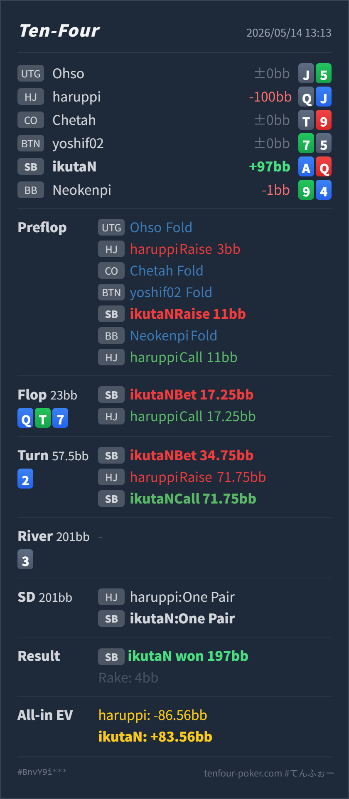

T4 HAND REVIEW
SB A♦Q♥ の HJ open 3bet pot / turn raise call レビュー
GTO基準ではHJの 3BB openに対するSB A♦Q♥ の 11BB 3betは自然です。flopの大きめcbet、turnの継続betも成立しますが、turnでraiseを受けた後は、必要勝率が低く、top pair top kicker + nut diamond drawを持つためcallで問題ありません。
Hero: SB
A♦ Q♥Villain: HJ
Q♠ J♦Board:
Q♦ T♣ 7♦ 2♦ 3♠- 主要論点: HJ openにSBで
A♦Q♥を3betし、Q♦ T♣ 7♦ 2♦のturnでbetしたあと、raise to71.75BBにcallしてよいか。 - GTO基準の総評: preflopの3betサイズは良く、flop/turnもvalueとprotectionを兼ねた自然な攻めです。turn raiseに対しては、追加call額が小さく、Heroはpairだけでなくnut diamond drawも持つので降りません。
- 次回の判断基準: 3bet potでtop pair top kickerを大きく打つなら、turnでflushが増えるカードが落ちても、自分がnut blocker / redrawを持つかを先に確認します。
A♦持ちならraise耐性はかなり上がります。 - 5枚役確認: River時点のHeroは
Q♥ Q♦ A♦ T♣ 7♦のone pairです。VillainはQ♠ Q♦ J♦ T♣ 7♦のone pairで、HeroはA kickerにより勝っています。diamond flushは完成していません。
ハンド要約
- Hero
- SB
A♦ Q♥ - Villain
- HJ
Q♠ J♦ - 形式
- T4 6MAX Cash
- Preflop
- UTG fold, HJ Villain raise
3BB, CO fold, BTN fold, SB Hero raise11BB, BB fold, HJ Villain call11BB - Board
Q♦ T♣ 7♦ 2♦ 3♠- Flop
- Pot
23BB, SB Hero bet17.25BB, HJ Villain call - Turn
- Pot
57.5BB, SB Hero bet34.75BB, HJ Villain raise to71.75BB, SB Hero call - River
- Pot
201BB, no action - Showdown
- HJ Villain one pair, SB Hero one pair
- Result
- SB Hero won
197BB, rake4BB - All-in EV
- HJ Villain
-86.56BB, SB Hero+83.56BB

判断のズレ
| 論点 | その場で置いた見立て | どこがズレやすいか | 次回の基準 |
|---|---|---|---|
| preflop 3bet | AQoなので3betしたい | HJの 3BB openに対してSB 11BB は約3.7倍で、OOPの3betとして自然です。A♦Q♥ はAQsほど余裕はありませんが、callより3betに回しやすい候補です。 | HJ 3BB openへSB 11BB前後は良い。AQoは3bet候補だが、相手がtightなら頻度を落とす |
| flop大きめcbet | top pairなので大きく打てる | Q♦ T♣ 7♦ はdrawが多く、HJ側にもQx/TT/77/J9s/diamond drawがあります。大きく打つほど相手のcontinueは強くなりますが、HeroはTPTKなのでvalue/protectionは取れます。 | TPTKはbet可。相手を広く残すなら半pot、小さく見せず取り切るなら大きめも可 |
| turn bet / raise対応 | flushが増えてraiseされたので危ない | 2♦ でdiamondは増えますが、Heroは A♦ を持ち、nut flushを強くblockしながらriver diamondで改善できます。raise後の追加callも約37BBで、必要勝率はかなり低いです。 | A♦Qx はturn raiseに降りすぎない。特に小さめraiseにはcall |
ストリート別レビュー
| ストリート | その時点の見え方 | 実ハンドの位置づけ | 評価 | その場の一手 |
|---|---|---|---|---|
| Preflop | HJが 3BB openし、SBまでfoldで回った場面です。 | A♦Q♥ はAQoで、HJ openに対して3bet候補に入る強いbroadwayです。SBはOOPなので、callより3betで主導権を取りやすいです。 | 良い寄り | 11BB 3betで問題ありません。相手がかなりtightなら一部callやfold寄りも考えますが、標準では自然な選択です。 |
Flop Q♦ T♣ 7♦ | 3bet potでHeroがtop pair top kickerを作り、boardはstraight drawとdiamond drawが多い構造です。 | Heroはかなり強いmade handですが、set/2pair/強いdrawに対して完全に安全ではありません。 | 良い寄り | 17.25BB into 23BB は大きめですが、value/protectionとして成立します。相手の弱いfloatを残したいなら半pot寄りも候補です。 |
Turn 2♦ | frontdoor diamondが増え、HJのcall rangeにflushが一部あります。一方でHeroは A♦ を持ちます。 | Heroはtop pair top kickerに加え、river diamondでnut flushに改善できます。相手のnut flushをかなりblockしています。 | 良い | 34.75BB betは可です。valueだけでなく、KJ/JJ/diamond持ちのQxに圧をかける意味があります。 |
| Turn raise対応 | HJが 71.75BB へraiseし、Heroは追加で約37BBを入れる場面です。 | Villainのvalueはflush/set/two pairが中心ですが、実戦のようなQx + diamondやpair + drawも混ざります。Heroは必要勝率に対して十分なequityがあります。 | 良い | callで良いです。ここをfoldすると、TPTK + nut redrawを持つ強い部分まで降りすぎになります。 |
River 3♠ | turnで実質all-inになり、riverはblank寄りです。 | Heroはflushを引けませんでしたが、A kickerのQ one pairでQJに勝っています。 | 良い | 追加判断はありません。turn callの時点で十分に利益的です。 |
持ち帰り
- preflopは良い寄りです。HJ
3BBopenにSB11BBは自然で、A♦Q♥はAQoとして3bet候補に入ります。 - flopの大きめbetは、top pair top kickerなら成立します。ただしこのサイズを使うと、callされた後の相手レンジはそれなりに強く残る点は意識します。
- turnの
2♦は一見かなり嫌なカードですが、HeroがA♦を持っているのが大きいです。nut flushをblockしつつ、river diamondでこちらがnut flushに改善できます。 - turn raiseへのcallは良い判断です。追加call額に対して必要勝率が低く、TPTK + nut diamond drawを降りる場面ではありません。
exploit 補足
- 実戦のVillainは
Q♠J♦で、top pair + diamond drawからturn raiseしています。このタイプがpair + drawを強く押すなら、HeroのA♦Q♥はかなり強いcallになります。 - 逆に、相手のturn raiseが完成flushやsetだけに極端に偏るタイプでも、今回のようにraise額が小さく、こちらが
A♦を持つ場合は簡単には降りません。大きなall-in overbetなら、相手傾向を見て慎重にします。